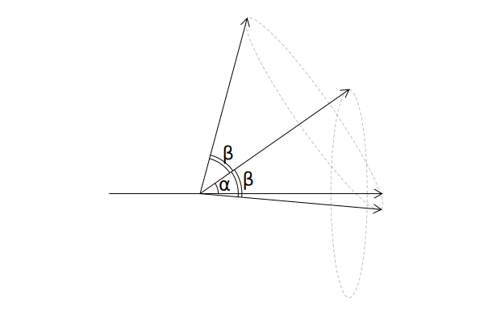

Pointing generation
One of the most basic facilities provided by CMBMissionSim is the generation of pointing timelines. CMBMissionSim assumes that the spacecraft orbits around the L2 Lagrangean point of the Sun-Earth system, and that it performs a monotonous spin around some axis, optionally with some precession period. This is a quite rigid scheme, but it is the one followed by Planck, CORE, and LiteBIRD.
The basic object used to create pointings is the ScanningStrategy structure. You can build a ScanningStrategy object using one of its constructors. The most basic one takes the following syntax:
ScanningStrategy(;
spin_rpm = 0,
prec_rpm = 0,
yearly_rpm = 1 / (MINUTES_PER_DAY * DAYS_PER_YEAR),
hwp_rpm = 0,
spinsunang_rad = deg2rad(45.0),
borespinang_rad = deg2rad(50.0),
)Note that this constructor only takes keywords, and that the measurement units used for them are different from the ones used in the fields in ScanningStrategy. Units in the constructors have been chosen in order to be easy to use, while units in ScanningStrategy allow to make computations more efficient.
Another kind of constructor allows to load the scanning strategy definition from a JSON file. It comes in two flavours:
# First version: pass a file object to `ScanningStrategy`
open("my_scanning_strategy.json", "r") do inpf
sstr = ScanningStrategy(inpf)
end
# Second version (easier): pass the name of the file
sstr = ScanningStrategy("my_scanning_strategy.json")These JSON files can be created using the function save:
sstr = ScanningStrategy(spinsunang_rad = deg2rad(35.0))
save("my_scanning_strategy.json", sstr)If you have loaded the Plots.jl package, you can produce a rough diagram of the scanning strategy using the plot function on a ScanningStrategy object:
using Plots
sstr = ScanningStrategy(
spinsunang_rad = deg2rad(35.0),
borespinang_rad = deg2rad(40.0),
)
plot(sstr)/home/travis/.julia/packages/GR/ZI5OE/src/../deps/gr/bin/gksqt: error while loading shared libraries: libQt5Widgets.so.5: cannot open shared object file: No such file or directory
connect: Connection refused
GKS: can't connect to GKS socket application
Did you start 'gksqt'?
GKS: Open failed in routine OPEN_WS
GKS: GKS not in proper state. GKS must be either in the state WSOP or WSAC in routine ACTIVATE_WS
(Conventionally, the angle between the spin axis and the Sun-Spacecraft direction is indicated with the symbol α, and the angle between the boresight direction and the spin axis with β.)
Once you have a ScanningStrategy object, you generate the sequence of pointing directions through one of the following functions:
genpointingsandgenpointings!generate a set of pointing directions that encompass a range of time; most of the time you will use this.time2pointingandtime2pointing!generate one pointing direction at a time; they are useful if you are working on a system with limited memory resources.
The version with the ! and the end save their result in a preallocated block, while the other ones use the return value of the function. The former is useful if you are using some strategy to pre-allocate memory in order to optimize running times. For instance, the following code is not optimal, as genpointings is re-creating the same result matrix over and over again:
const SECONDS_IN_A_HOUR = 3600.
sstr = ScanningStrategy()
start_time = 0.0
# Simulate an observation lasting 1000 hours
for hour_num in 1:1000
# Each call to "genpointings" allocates a new "pnt" matrix:
# doing it multiple times like in this "for" loop takes time and
# slows down the execution!
pnt = genpointings(sstr, start_time:(start_time + SECONDS_IN_A_HOUR),
Float64[0, 0, 1], 0.0)
# Use "pnt" here
# ...
endThe code below is more efficient, as the allocation is done only once:
const SECONDS_IN_A_HOUR = 3600.
sstr = ScanningStrategy()
start_time = 0.0
# Allocate this variable once and for all
pnt = Array{Float64}(undef, SECONDS_IN_A_HOUR, 6)
# Simulate an observation lasting 1000 hours
for hour_num in 1:1000
# Use "pnt" again and again, overwriting it each time: this is
# much faster!
genpointings!(sstr, start_time:(start_time + SECONDS_IN_A_HOUR),
Float64[0, 0, 1], 0.0, pnt)
# Use "pnt" here
# ...
endScanningStrategy
Harlequin.ScanningStrategy — Type.The structure ScanningStrategy encodes the information needed to build a set of pointing directions. It contains the following fields:
omega_spin_hz: angular speed of the rotation around the spin axis (equal to 2πν)omega_prec_hz: angular speed of the rotation around the precession axis (equal to 2πν)omega_year_hz: angular speed of the rotation around the Elliptic axis (equal to 2πν)omega_hwp_hz: angular speed of the rotation of the half-wave plate (equal to 2πν)spinsunang_rad: angle between the spin axis and the Sun-Earth directionborespinang_rad: angle between the boresight direction and the spin axisq1,q3: quaternions used to generate the pointings
Each field has its measure unit appended to the name. For instance, field spinsunang_rad must be expressed in radians.
Harlequin.update_scanning_strategy — Function.update_scanning_strategy(sstr::ScanningStrategy)Update the internal fields of a ScanningStrategy object. If you change any of the fields in a ScanningStrategy object after it has been created using the constructors, call this function before using one of the functions time2pointing, time2pointing!, genpointings, and genpointings!, as they rely on a number of internal parameters that need to be updated.
sstr = ScanningStrategy()
# ... use sstr ...
sstr.borespinang_rad *= 0.5
update_scanning_strategy(sstr)Pre-defined scanning strategies
Harlequin includes a few constants for the scanning strategies used by notable CMB proposals.
Harlequin.CORE_SCANNING_STRATEGY — Constant.CORE_SCANNING_STRATEGY::ScanningStrategyA ScanningStrategy object describing the proposed scanning strategy of the CORE spacecraft (Delabrouille et al., 2018).
Harlequin.PICO_SCANNING_STRATEGY — Constant.PICO_SCANNING_STRATEGY::ScanningStrategyA ScanningStrategy object describing the proposed scanning strategy of the PICO spacecraft (Hanany et al., 2019).
Generating pointings over long periods of time
Harlequin provides an handy structure, SegmentedTimeSpan, which can be used to produce the time ranges required by genpointings and genpointings! in a segmented fashion.
Suppose you want to simulate the behavior of a spacecraft over one year. As the sampling frequency of the detector is small, one tenth of a second, the pointing matrix returned by genpointings is going to be huge. Usually there is no need to keep all the pointing matrix at once; typically what you want to keep is the pixel index for each sample and the polarisation angle.
In this case, you can divide the overall time span (one year) into small segments and process one of them at a time, using SegmentedTimeSpan. The following example shows the idea: we simulate one day of observations one hour at a time.
sts = SegmentedTimeSpan(
start_time = 0.0,
sampling_time = 0.1,
segment_duration = 3600, # One hour
num_of_segments = 24, # One day of observations
)
# Each element of the "sts" array is the sequence of time samples
# for one day
# Size the pointing matrix according to the first day
pointings = Array{Float64}(undef, length(sts[1]), 6)
for (hour_number, cur_time_span) in enumerate(sts)
println("Processing hour #$hour_number, time samples are $cur_time_span")
genpointings!(
PICO_SCANNING_STRATEGY,
cur_time_span,
Float64[0, 0, 1],
0.0,
pointings,
)
# "pointings" contains the pointings for the current hour
endProcessing hour #1, time samples are 0.0:0.1:3599.9
Processing hour #2, time samples are 3600.0:0.1:7199.9
Processing hour #3, time samples are 7200.0:0.1:10799.9
Processing hour #4, time samples are 10800.0:0.1:14399.9
Processing hour #5, time samples are 14400.0:0.1:17999.9
Processing hour #6, time samples are 18000.0:0.1:21599.9
Processing hour #7, time samples are 21600.0:0.1:25199.9
Processing hour #8, time samples are 25200.0:0.1:28799.9
Processing hour #9, time samples are 28800.0:0.1:32399.9
Processing hour #10, time samples are 32400.0:0.1:35999.9
Processing hour #11, time samples are 36000.0:0.1:39599.9
Processing hour #12, time samples are 39600.0:0.1:43199.9
Processing hour #13, time samples are 43200.0:0.1:46799.9
Processing hour #14, time samples are 46800.0:0.1:50399.9
Processing hour #15, time samples are 50400.0:0.1:53999.9
Processing hour #16, time samples are 54000.0:0.1:57599.9
Processing hour #17, time samples are 57600.0:0.1:61199.9
Processing hour #18, time samples are 61200.0:0.1:64799.9
Processing hour #19, time samples are 64800.0:0.1:68399.9
Processing hour #20, time samples are 68400.0:0.1:71999.9
Processing hour #21, time samples are 72000.0:0.1:75599.9
Processing hour #22, time samples are 75600.0:0.1:79199.9
Processing hour #23, time samples are 79200.0:0.1:82799.9
Processing hour #24, time samples are 82800.0:0.1:86399.9Harlequin.SegmentedTimeSpan — Type.struct SegmentedTimeSpanAn immutable structure representing a long time span, split into units of equal length called segments. This structure is typically used to make consecutive calls to genpointings! and genpointings.
The fields are the following:
start_timeis the time of the first sample in the time spansampling_timeis the integration time for one samplesegment_durationis the duration of one segmentnum_of_segmentsis the number of segments in the time span
The following example defines a time span of 1 year as the composition of multiple spans, each lasting one day:
sts = SegmentedTimeSpan(
start_time = 0.0,
sampling_time = 0.1,
segment_duration = 24 * 3600,
num_of_segments = 365,
)Once a SegmentedTimeSpan has been constructed, it behaves like an array, whose elements are time ranges of type StepRangeLen. You can iterate over it, to run functions like genpointings:
for cur_time_span in sts
pointings = genpointings(PICO_SCANNING_STRATEGY, cur_time_span, ...)
# "pointings" contain the pointings for the time span
endLoading and saving scanning strategies
Harlequin.load_scanning_strategy — Function.load_scanning_strategy(io::IO) -> ScanningStrategy
load_scanning_strategy(filename::AbstractString) -> ScanningStrategyCreate a ScanningStrategy object from the definition found in the JSON file io, or from the JSON file with path filename. See also load_scanning_strategy.
Harlequin.to_dict — Function.to_dict(sstr::ScanningStrategy) -> Dict{String, Any}Convert a scanning strategy into a dictionary suitable to be serialized using JSON or any other structured format. See also save.
Harlequin.save — Function.save(io::IO, sstr::ScanningStrategy)
save(filename::AbstractString, sstr::ScanningStrategy)Write a definition of the scanning strategy in a self-contained JSON file. You can reload this definition using one of the constructors of ScanningStrategy.
Pointing generation
Harlequin.time2pointing — Function.time2pointing!(sstr::ScanningStrategy, time_s, beam_dir, polangle_rad, resultvec)
time2pointing(sstr::ScanningStrategy, time_s, beam_dir, polangle_rad)Calculate the pointing direction of a beam along the direction beam_dir, with a detector sensitive to the polarization along the angle polangle_rad. The result is saved in resultvec for time2pointing!, and it is the return value of time2pointing; it is a 6-element array containing the following fields:
- The colatitude (in radians) of the point in the sky
- The longitude (in radians) of the point in the sky
- The polarization angle, in the reference frame of the sky
- The X component of the normalized pointing vector
- The Y component
- The Z component
Fields #4, #5, #6 are redundant, as they can be derived from the colatitude (field #1) and longitude (field #2). They are returned as the code already computes them.
The vector beam_dir and the angle polangle_rad must be expressed in the reference system of the focal plane. If polangle_rad == 0, the detector measures polarization along the x axis of the focal plane. The normal direction to the focal plane is along the z axis; thus, the boresight director is such that beam_dir = [0., 0., 1.].
Harlequin.time2pointing! — Function.time2pointing!(sstr::ScanningStrategy, time_s, beam_dir, polangle_rad, resultvec)
time2pointing(sstr::ScanningStrategy, time_s, beam_dir, polangle_rad)Calculate the pointing direction of a beam along the direction beam_dir, with a detector sensitive to the polarization along the angle polangle_rad. The result is saved in resultvec for time2pointing!, and it is the return value of time2pointing; it is a 6-element array containing the following fields:
- The colatitude (in radians) of the point in the sky
- The longitude (in radians) of the point in the sky
- The polarization angle, in the reference frame of the sky
- The X component of the normalized pointing vector
- The Y component
- The Z component
Fields #4, #5, #6 are redundant, as they can be derived from the colatitude (field #1) and longitude (field #2). They are returned as the code already computes them.
The vector beam_dir and the angle polangle_rad must be expressed in the reference system of the focal plane. If polangle_rad == 0, the detector measures polarization along the x axis of the focal plane. The normal direction to the focal plane is along the z axis; thus, the boresight director is such that beam_dir = [0., 0., 1.].
Harlequin.genpointings — Function.genpointings!(sstr::ScanningStrategy, timerange_s, beam_dir, polangle_rad, result)
genpointings(sstr::ScanningStrategy, timerange_s, beam_dir, polangle_rad)Generate a set of pointing directions and angles for a given orientation beam_dir (a 3-element vector) of the boresight beam, assuming the scanning strategy in sstr. The pointing directions are calculated over all the elements of the list timerange_s. The angle polangle_rad is the value of the polarization angle at time $t = 0$.
The two functions only differ in the way the result is returned to the caller. Function genpointings returns a N×6 matrix containing the following fields:
- The colatitude (in radians)
- The longitude (in radians)
- The polarization angle (in radians)
- The X component of the one-length pointing vector
- The Y component
- The Z component
Function genpointings! works like genpointings, but it accept a pre-allocated matrix as input (the result parameter) and will save the result in it. The matrix must have two dimensions with size (N, 6) at least.
Both functions are simple iterators wrapping time2pointing! and time2pointing.
Harlequin.genpointings! — Function.genpointings!(sstr::ScanningStrategy, timerange_s, beam_dir, polangle_rad, result)
genpointings(sstr::ScanningStrategy, timerange_s, beam_dir, polangle_rad)Generate a set of pointing directions and angles for a given orientation beam_dir (a 3-element vector) of the boresight beam, assuming the scanning strategy in sstr. The pointing directions are calculated over all the elements of the list timerange_s. The angle polangle_rad is the value of the polarization angle at time $t = 0$.
The two functions only differ in the way the result is returned to the caller. Function genpointings returns a N×6 matrix containing the following fields:
- The colatitude (in radians)
- The longitude (in radians)
- The polarization angle (in radians)
- The X component of the one-length pointing vector
- The Y component
- The Z component
Function genpointings! works like genpointings, but it accept a pre-allocated matrix as input (the result parameter) and will save the result in it. The matrix must have two dimensions with size (N, 6) at least.
Both functions are simple iterators wrapping time2pointing! and time2pointing.
Utility functions
Harlequin.rpm2angfreq — Function.rpm2angfreq(rpm)
angfreq2rpm(ω)Convert rotations per minute into angular frequency 2πν (in Hertz), and vice versa.
Harlequin.angfreq2rpm — Function.rpm2angfreq(rpm)
angfreq2rpm(ω)Convert rotations per minute into angular frequency 2πν (in Hertz), and vice versa.
Harlequin.period2rpm — Function.period2rpm(p)
rpm2perriod(rpm)Convert a period (time span) in seconds into a number of rotations per minute, and vice versa.
Harlequin.rpm2period — Function.period2rpm(p)
rpm2perriod(rpm)Convert a period (time span) in seconds into a number of rotations per minute, and vice versa.